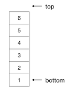
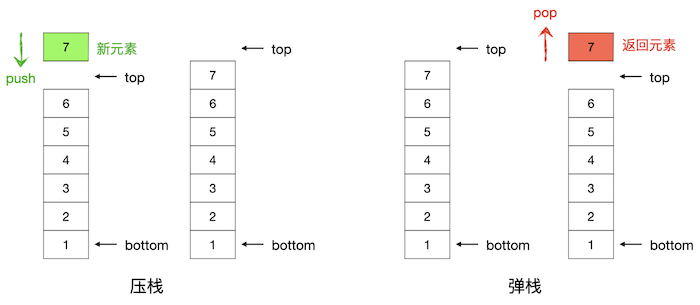

4.2.1. 栈：基本概念和实现¶
英语单词 stack 原本的意思是堆垛。想象这样一个仓库里的货物堆垛，它用来堆放一个一个的长方体标准货箱。当有新的货物要入库时，仓库工人用铲车将箱子堆放到堆垛的那个位置最方便？当然是最顶上了，一个一个箱子的依次向上堆就可以了。当货物要出库时，工人师傅又开着铲车进来取箱子，这时候取那个位置的箱子最方便呢？当然还是取最顶上的箱子了，一个一个箱子地依次向下取。这就是仓库里货物堆垛的规则。在这样的规则下，越先入库的货物就越被摆放在堆垛的下部，而越后入库的货物就会被越先取走出库。
4.2.1.1. 栈的概念及基本操作¶
超级重要的数据结构栈的英文名称就叫做 stack，又叫做后进先出表（LIFO），意思是 Last In First Out。它就是模仿仓库里的货箱堆垛来实现元素存取的一种特殊的线性表，是我们对它的元素存取方式进行了这样的限制：只允许在它的表尾添加元素，不能在任何其他位置添加；只允许读取表尾的元素，不允许读取任何其他位置的元素。通过这样的限制就实现了先加入栈的元素总是会被后读取，后添加进栈的元素会被先读取到，也就是所谓的先进后出规则。
栈作为一种特殊的线性表，有一些特殊的名称。栈的首元素所在元素称为栈底（bottom），尾元素称为栈顶元素，但通常会称其后一个位置为栈顶（top）。空栈没有栈顶元素，栈顶位置等于栈底位置。无论是用顺序表实现的栈还是用链表实现的栈，一般我们都用下面这样的方式来绘制栈的抽象的示意图：
提示
有些教材可能直接把栈顶元素所在的位置称为栈顶，这只是习惯上的不同，实质上没有区别。但是这样做会导致空栈时没有栈顶位置，所以大多数教材都使用栈顶元素的后一个位置作为栈顶。但栈顶元素一定是指栈的尾元素。
栈必须至少实现两个操作：压栈（push）和弹栈（pop）。
所谓压栈，就是指向栈顶添加一个薪元素，这也是栈唯一允许的添加元素操作。压栈操作其实就是把新元素放到栈顶位置，成为新的栈顶元素，然后更新栈顶为新栈顶元素的后一个位置。
而弹栈，顾名思义，就是压栈的反向操作，即获取并删除栈顶元素。弹栈操作把当前的栈顶元素作为返回值返回给调用者，并从栈中删除这个元素，当然也要相应地更新栈顶。
压栈和弹栈操作的示意图如下：
实际应用中有时候会不方便使用同时返回元素的弹栈操作。比如在C++语言中，受到语言本身的限制，如果栈是用动态内存分配来实现动态长度的，而元素是大规模的自定义结构类型，那么在弹栈的时候一定会销毁栈顶元素，而销毁了栈顶元素就无法以引用方式返回元素，只能以传值的方式返回一份原栈顶元素值的复制品，这样做是效率低下的。还有一种情况是程序本身需要使用栈顶元素，但是又不想把它从栈中弹掉。所以在使用C++语言编程时我们常把通常的弹栈操作分成两部分：一个是不返回栈顶元素的弹栈操作，单纯地弹掉栈顶元素而不返回它；另一个是被称为偷窥（peek）的操作，单纯地返回栈顶元素（往往是返回引用）而不弹掉它。
提示
STL的 stack 容器就是这样的设计，它的 pop() 成员函数返回类型为 void，不返回任何东西。要访问栈顶元素但不弹掉时使用 top() 成员函数，它会返回栈顶元素的引用。STL的设计者一定是觉得偷窥这个词不好听。
栈原则上最少只需要提供压栈和弹栈两种操作，通常会再提供一个访问栈顶元素的功能即可。为了方便使用，往往还会提供一些辅助功能，比如空栈判断、获取长度等。
要自己实现一个栈其实非常简单，用数组或者单链表或者任何其他线性表数据结构作为其基础就很容易实现栈。事实上，STL库的 vector 容器或者 list 容器都有相当于压栈的成员函数 push_back()、相当于弹栈的成员函数 pop_back() 和相当于访问栈顶元素的成员函数 back()。所以这两个容器就可以直接拿来当做栈使用。但是如果我们需要的确实只是一个栈而不需要其他多余功能时，我们不建议使用这些容器，STL库提供了一个专门的栈容器 stack。为什么呢？因为 stack 容器就是一个单纯的栈，相比顺序表或者双链表来说它速度更快、用法更简单。
4.2.1.2. STL栈容器stack¶
STL库的栈容器 stack 是一个标准的栈结构，它的用法非常简单。和其他任何STL库的东西一样，它使用命名空间 std，并且要先引入 stack 库。
stack 容器的构造器很简单，它要么是什么参数都不需要的默认构造器，要么可以用一个别的序列容器来初始化它。例如：
stack<int> stack1; // 生成一个空栈，元素类型为int
vector<char> letters(26, 'a'); // 构造一个元素类型为char的vector，初始化为26个'a'
for (int i = 0; i < 26; ++i) // 将letters的内容改为26个小写字母
letters[i] += i;
stack<char> stack2(letters); // 生成一个元素类型为char的栈，并用letters的内容初始化
三大基本功能
stack 容器提供了压栈、弹栈和访问栈顶元素三大基本功能，其中弹栈功能不返回栈顶元素，只是单纯地将其删除。对应三个成员函数如下：
void push(const value_type& val); // 压栈，value_type是栈的元素类型
void pop(); // 弹栈，删除栈顶元素
value_type &top(); // 访问栈顶元素，引用返回，故可用于修改栈顶元素
这三个成员函数都非常的直观，一看就知道该怎样使用，后面我们会给出一个简单的示例。
三种辅助功能
stack 容器提供了三种辅助功能，空栈测试、获取长度和比较运算。和 vector 一样，它们分别用成员函数 empty()、size() 和六种大小比较运算符来实现，大小比较采用的是字典序规则。事实上这三种辅助功能是所有STL容器通用的，都一样，这里就不再细述了。
下面看一个简单的例子。例如我们定一个字符类型的栈，然后做如下操作，请设想一下会得到怎样的结果？
#include <stack>
#include <iostream>
using namespace std;
int main()
{
stack<char> s1;
for (char c = 'A'; c <= 'F'; ++c) s1.push(c);
while (!s1.empty()) {
cout << s1.top() << " ";
s1.pop();
}
cout << endl;
return 0;
}
请不运行上面的程序，直接写出运行结果。
要注意的是：stack 容器一共就实现了这么几个功能，再没有别的功能了。非常的简洁，运行速度非常快，是一个纯粹的栈。如果在你的程序里，确实只需要这样一个纯粹的栈，请不要用其他容器，就用它。
警告
stack 容器除了 top() 成员函数，没有任何其他方法可以访问到任何元素！没有方括号加下标值！没有迭代器！